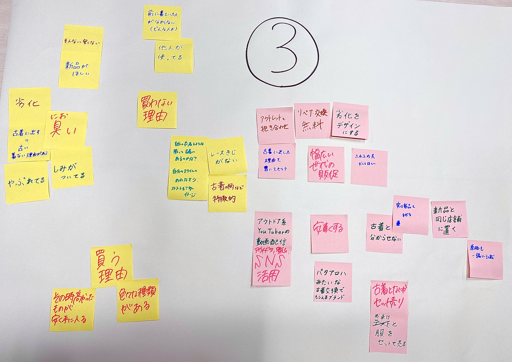

２０２５年６月１３日
- パタゴニアによるプレゼンテーション(サーキュラーに関する取り組みも含む)
- 経営学部山本ゼミ学生による提案発表
- 質疑応答
- グループディスカッション
パタゴニアによるプレゼンテーション
パタゴニアとは
- パーパス『地球を救うためのビジネスを営む』
- 残金を非営利２団体に渡し、利益を気候変動対策へ当てる
- オーナーは『地球』
- ５つの価値観【質・誠実さ・環境主義・公正さ・従来のやり方にとらわれない】
- 元々は登山道具の販売。顧客はアウトドアスポーツ好きが多いため、シンプル・機能性・品質重視。
アパレル業界の課題
- 服の製造は世界の１０％の汚染原因
- プラスチック製品の６０～７３％が焼却消費で循環していない
パタゴニアの取り組み
- １００％リサイクルナイロンを使用
- 製品寿命の延長と新品製造の抑制を２０３０年までの目標に掲げる
- 不要なものを取り除き、一過性の流行を追わない
- 最後まで製品に責任を持つ『End of Life』対応。(３Ｒができる技術開発の投資)
- 行っていることすべてが解決策に。
- 地球と人に有益な最高の材料を使用。
サーキュラリティに関する具体的な取り組み
■Worn Wear(古着事業)
・サービス内容
- 着古されたものの再販・リセール
- オンライン買い取り・販売(ラグタグ)
- ポップアップストア(古着屋化イベント)
- 常設古着コーナー(梅田・東京京橋・鎌倉(女性限定))
・特徴
- 修理・洗濯・サイズ交換対応
- ストーリータグ：前のオーナーの思い出を次のユーザーに引き継ぐ
- キャッチフレーズ：「新品よりずっといい」
・プレラブドリア
- 「愛されたことのあるリア」というネーミング
- 中古品に愛着や価値を生む
- ストーリー付きで付加価値向上
・課題
- 日本では古着に対する衛生面の抵抗感
- ストーリーと製品マッチングの難しさ
経営学部山本ゼミ学生による提案発表(服の回収促進アイデア)
現状の課題
- ６８％が燃えるゴミ。古着回収はわずか７％。
- 回収ボックスを探す手間があり、多くが燃えるゴミに出される。
- 環境意識だけでは行動を促しにくい
アイデア
１．回収を『楽しい体験』にする
- 例：『写ルンです』の現像体験を古着回収に応用
- 古着を持って行くと楽しみがある仕組みを作る
２．ポイント制度の導入
- 回収でポイント→非売品ワッペンと交換
- ポイントを貯めるほど、ワッペンの特別感が増す(例：MLB記念ワッペン)
３．フィードバック
- 「正しいこと」→「楽しい・かっこいいこと」に価値転換し、参加したくなる
- 理想のモデルは、友人や子どもに譲り、使い尽くす中で、修理すること。
グループディスカッション(２０分間)
【テーマ】(３つの中から１つ選ぶ。最終的にグループごとに発表)
- 着なくなった衣類を手放す(買取／回収)ことを促進するためのアイデア
- そのアクションを一般化／習慣化していくためのアイデア
- 古着を選ぶことの選択肢をもっと広げていくためのアイデア

③のテーマについて話し合った。
黄色の付箋：古着を買う理由と買わない理由 ／ ピンクの付箋：テーマに沿ったアイデア
店舗・販売形態のアイデア
・移動販売車(古着屋)
- 期間限定で各地を巡回
- 「見に行きたい！」と思わせる仕掛け
・コンセプトを明確にした古着屋
その他のポイント
- 古着市場は新規衣類よりも約８割成長
- 日本は古着購入層が若い人で増えているが、心理的・衛生的ハードルも高い
- ビジネスモデルは利益も重要。持続可能で他社も追随可能な仕組みを目指す
- 米国ではアップサイクルを行い、リサイクルの手前で、材料から別の製品に生まれ変わらせる。日本支社でも検討したい。